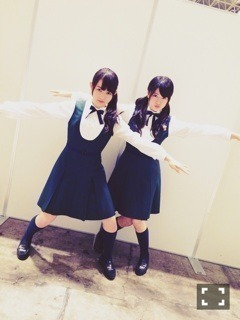
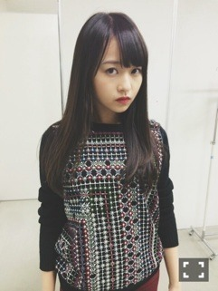

| 2014/09 30 Tue | ムード逃げ。605回目 |
幕張メッセ2日間
ありがとうございました！
全国握手会

ひなちまファンのみなさん
とても真面目で優しくて
楽しかったです。
ほんわかレーンでした。
ありがとうございました。
ひなちまテストお疲れ様！
ライブに向けて一緒に頑張ってます。
テストもあって大事な中
頑張ってる、えらい。
休憩中も練習してました。
個別握手会
1部

ニット TOPSHOP
スキニーパンツ ？
靴 mystic

これ、すべて刺繍でできた柄！
刺繍好きだからたまらんかった
また黒ベースのもの買っちゃった、
2部
ベレー帽かぶった
3、4部

ニット LOWRYSFARM
タイトスカート ？
ニットは黒のビーズ付けたよー
画王について
キリン人気でした！
のぎ天の滝行について
たくさんのアドバイス
ありがとうございました。
未熟な私ですが、
これからも応援してください。
元気たくさんもらえて
アンダーライブへの熱が
更に上がりました〜
気持ちが沈んでたんだけど、
あることがあって一気に
テンション上がったり、、
キモチワルイ
気持ちの上がり下がりが
激しい日々を送っています。
今日もがんばるぞー
まりか
コメント(598)
2014/09/30 14:24